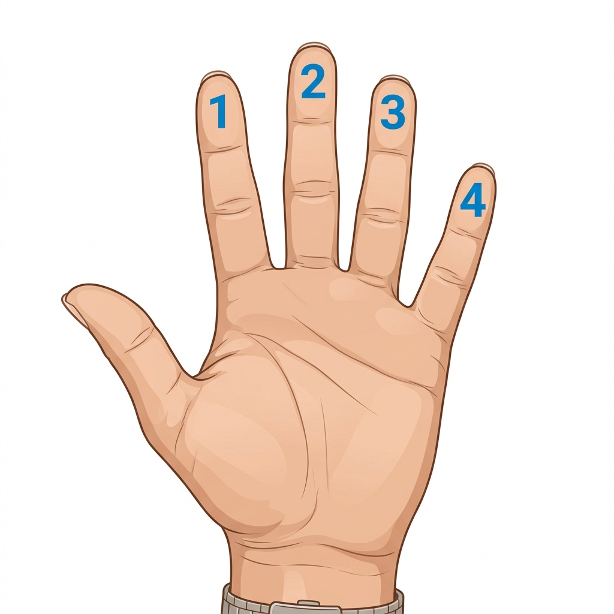

🎸 Herramienta de Acordes
Genera digitaciones desde un nombre o identifica un acorde desde las pisadas — basado en teoría musical formal
Bienvenido a la Herramienta de Acordes de Acordes Rafa, una aplicación interactiva diseñada para ayudar a guitarristas de todos los niveles a comprender y visualizar la armonía en el mástil. Ya sea que estés componiendo una canción y necesites una digitación específica, o que hayas encontrado una posición interesante en tu guitarra y quieras saber cómo se llama el acorde, esta herramienta es tu compañera ideal.
Generar, Buscar o Identificar Acordes
Escribe el nombre del acorde:
O marca las pisadas en el mástil abajo:
Guía de Dedos

Usa el buscador o haz clic en el mástil para comenzar
Nuestra plataforma cuenta con dos modos principales: el Generador de Acordes, que utiliza algoritmos basados en teoría musical para mostrarte las mejores formas de tocar cualquier acorde (desde tríadas básicas hasta complejas extensiones de jazz), y el Identificador de Acordes, que analiza las notas que coloques en el diapasón virtual para darte el nombre exacto y sus posibles variantes armónicas.
Para usar el generador, simplemente escribe el nombre del acorde en el buscador (por ejemplo, "Cmaj7" o "LAm7") y presiona Enter. Verás diagramas claros con la posición de los dedos y las notas que componen el acorde. En el identificador, haz clic sobre los trastes en el mástil interactivo para marcar tus dedos; el sistema calculará instantáneamente la estructura interválica y te sugerirá el nombre más apropiado según la teoría musical moderna.
Esta herramienta es totalmente gratuita y ha sido optimizada para funcionar tanto en computadoras como en dispositivos móviles. Esperamos que te sea de gran utilidad en tu camino de aprendizaje y que te ayude a desbloquear nuevas posibilidades sonoras en tu guitarra.